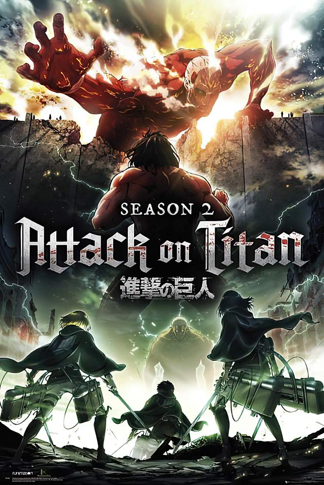

Po staletí bylo lidstvo pronásledováno obřími, tajemnými predátory známými jako Titáni. Tři mocné zdi – Wall Maria, Rose a Sheena – poskytovaly lidstvu mír a ochranu po více než sto let. Tento mír byl však narušen, když se objevil Kolosální Titán a Obrněný Titán a zničili nejvzdálenější zeď, Wall Maria. Lidstvo bylo nuceno ustoupit za Wall Rose a se zatajeným dechem čekalo, až se Titáni znovu objeví a znovu zničí jejich bezpečné útočiště.
V Shingeki no Kyojin Season 2 se Eren Yeager a další ze 104. výcvikového sboru právě začali stávat řádnými členy průzkumného sboru. Když se znovu připravují čelit Titánům, jejich přípravy jsou přerušeny invazí Wall Rose – ale všechno není tak, jak se zdá, protože se odhalují další záhady. Zatímco Survey Corps závodí o záchranu zdi, odhalí více o invazních Titánech a temných tajemstvích svých vlastních členů.
